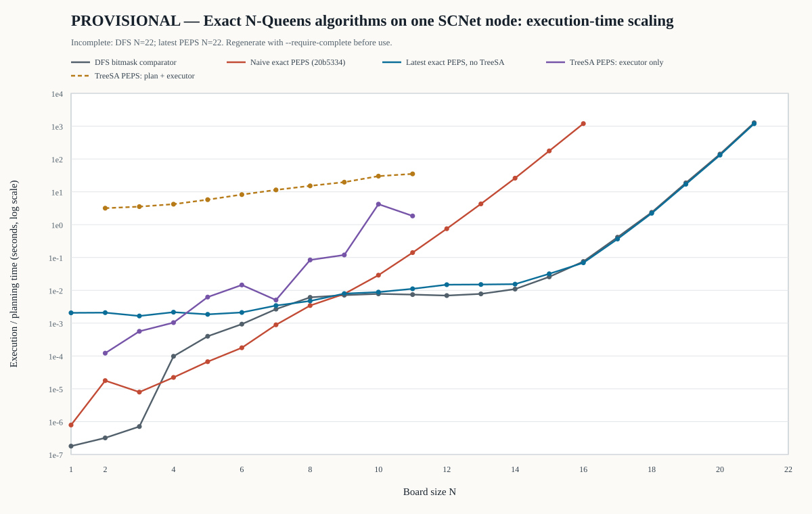
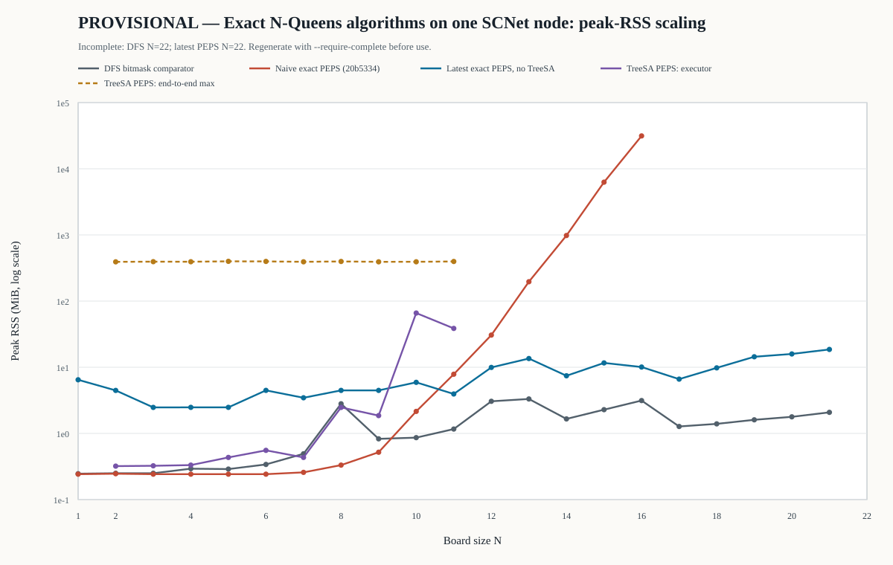

A successful method study, but not yet a frontier count
The project has produced a documented, strictly exact contraction of the Liu–Liao–Wang Sec. VI network and evolved it from a literal sparse site-by-site implementation into a low-memory, parallel, certified contraction. It has verified every count through N=22 on the current production path. It has not reproduced Q(27), computed Q(28), or submitted the final harness PR; therefore it must not be described as satisfying Issue #34.
41497149 exited cleanly at
06:29:52. It computed Q(22)=2,691,008,701,644 in 10,112.287 s, then reproduced the answer with
a separate checked-u128 relation replay in 19,948.064 s. Total Slurm elapsed time was 8:21:02.
This is now a measurement, not a projection.
What is established
Tensor construction, boundaries, exact arithmetic, C-derived specialization, symmetry weights, and small-N equivalence all have explicit tests. Q(8), Q(16), Q(20), and Q(22) pass.
What improved
The contraction moved from large hash-materialized frontiers to compact sharded vectors, then to sparse prefix sectors and a streamed recursive tail. Memory stopped being the immediate limiter; exponential work did not.
What remains open
There is no measured lower growth exponent than the optimized DFS comparator. Q(27), a robust Q(28) task manifest, distributed recovery, and the harness PR remain outstanding.
What Issue #34 actually requires
QuantumBFS/quantum.harness Issue #34 asks for exact contraction of the Sec. VI N-Queens tensor network, with no count-changing truncation, measured runtime/memory scaling, comparison against classical FPGA/GPU search, and an attempt to reach Q(28). Its minimum benchmark set is Q(8), Q(16), Q(20), and Q(27).
A later issue comment says that frontier-pushing work need not literally follow the tensor formulation. That broadens the challenge conversation, but the issue body still labels the method “PEPS Based Algorithm.” More importantly, this repository's explicit research contract is stricter: DFS may be an oracle/comparator, while the primary method must remain an actual Sec. VI contraction or a proved-equivalent optimization mechanically derived from C.
| Acceptance item | Evidence in this project | Status at data cut |
|---|---|---|
| Explicit Sec. VI B/C and v0, v1, v2 | Constructors, truth-table tests, direct sitewise reference, fail-closed compiler | PASS |
| Strict exactness | Checked integers or certified finite-field/CRT; no float, SVD, threshold, or rounding | PASS |
| Q(8)=92 | Literal, optimized, scalar, CRT, TreeSA diagnostic, and independent oracle paths | PASS |
| Q(16)=14,772,512 | Local production benchmarks and cluster series | PASS |
| Q(20)=39,029,188,884 | scnet job 41497022, exact three-prime CRT | PASS |
| Largest project result: Q(22)=2,691,008,701,644 | scnet job 41497149, exact CRT count plus checked-u128 replay | PASS |
| Q(27)=234,907,967,154,122,528 | No completed project run | NOT MET |
| Q(28) or defensible no-go analysis | N=22 held-out forecast check, N=18–22 refit, and measured bottleneck; no full task-distribution study yet | PARTIAL |
| Runtime/memory/support reporting | Machine-readable CSVs, per-experiment reports, hardware/compiler/repetition metadata | PASS |
| Comparison with FPGA/GPU backtracking | Algorithmic comparison and same-hardware Rust DFS; cross-hardware speedups deliberately avoided | PASS |
| PR against quantum.harness | Not yet submitted | NOT MET |
The network being contracted
Each board site is not a Boolean clause pasted into a search program. It is a local tensor where four directed, dimension-two constraint channels meet. A channel bit records whether its row, column, or diagonal has already emitted a queen signal.
in/out ∈ {0,1}
in/out ∈ {0,1}
↘ and ↙
17 nonzero entries
Rank-9 site tensor B
B has one physical occupation index α∈{0,1} and eight virtual indices, paired as incoming/outgoing legs on four constraint lines.
- α=0: each channel independently passes 0→0 or 1→1, giving 24=16 entries.
- α=1: every incoming signal is 0 and every outgoing signal is 1, giving one occupied entry.
- All 17 coefficients are exactly one.
Rank-8 counting tensor C
The physical index is contracted with (1,1)T:
The empty and occupied virtual tuples do not collide, so C also has exactly 17 nonzeros. The complete board contraction sums one unit weight for every legal placement.
Boundary vectors are part of the mathematics
| Vector | Where applied | Constraint encoded |
|---|---|---|
| v0=(1,0) | Start of every row, column, and diagonal line | No queen signal has yet appeared |
| v1=(0,1) | End of every row and column | Exactly one queen signal must have appeared |
| v2=(1,1) | End of both diagonal families | Zero or one queen signal is accepted |
The transfer operator is nilpotent in the finite problem: TN+1=0. Consequently, dominant-eigenvector methods aimed at an infinite fixed point target the wrong quantity. The answer lives in a finite exact power, where intermediate support—not a leading eigenvalue—is the central computational object.
From literal contraction to a certified streaming contraction
The core research achievement is not a single micro-optimization. It is a chain of equivalence-preserving changes in representation and contraction association, each tested against the explicit tensor before it was trusted at larger N.
1. Literal sparse row transfer
The original solver contracted C site by site, carried the open column and two diagonal virtual signals as a sparse boundary tensor, and merged equal outgoing boundaries with exact integer addition. The frontier has at most 3N binary signals, hence a dense representation bound of 23N. Actual support is much smaller, but initially grew by roughly five to six per added row size and reached millions of materialized states.
2. Mechanical partial evaluation of C
The compiled row operator scans the real C entries and accepts specialization only if it finds all sixteen identity pass-through signatures, one occupied transition, unit coefficients, and nothing else. This proof obligation matters. Once established, legal occupied positions are the zeros of the three incoming masks and the outgoing virtual signals are deterministic.
positions = !(columns | diag_dr | diag_dl) & board_mask
columns' = columns | selected
diag_dr' = ((diag_dr | selected) << 1) & board_mask
diag_dl' = (diag_dl | selected) >> 1These instructions resemble a classic bitboard solver because the Sec. VI tensor compiles to the same local automaton under row-v1 boundary conditions. The classification rests on the derivation and replay chain, not variable names or visual similarity.
3. Change the contraction association, not the contracted network
Breadth-first row contraction materializes and sorts entire boundary layers. E38 introduced a hybrid: merge a small exact prefix, then recursively consume the remaining C-derived relation. E40 made the cut adaptive; E42 and E47 grouped the last four and then last six rows into certified terminal supernodes. The mathematical summation is identical, but the memory schedule changes from “store every middle tensor entry” to “stream independent exact sectors.”
4. Exact arithmetic chosen by a proved bound
All coefficients are nonnegative and Q(N)≤N!. For N≤20, N! fits in u64 and every arithmetic operation is still checked; an overflow or artificial test limit causes a complete replay. At larger N, fixed-width residues are accumulated modulo deterministic primes and reconstructed only when the checked product M=∏pi exceeds N!. Three near-232 primes cover N≤27; N=28 requires four. No floating-point decision enters the result.
The formal row-transfer statement, proof, reassociation corollary, scope, and executable
proof obligations are recorded in
docs/sec_vi_row_automaton_equivalence.md.
Why agreement with OEIS is not the proof
A wrong algorithm can return a known number. Fidelity and final-count validation are therefore separate gates. The project builds an evidence chain from local truth tables to optimized successors, arithmetic uniqueness, and only then external known values.
| Layer of evidence | What is checked | Failure prevented |
|---|---|---|
| Local tensor construction | B has 16 empty + 1 occupied entry; C has 17 entries after summing α | Replacing the paper tensor with a handwritten rule |
| Truth tables | All empty channels pass independently; occupied is four-channel 0→1 | Wrong leg order, direction, or emission semantics |
| Boundary tests | v0…v1 accepts exactly one occupation; v0…v2 accepts at most one | Confusing row/column “exactly one” with diagonal “at most one” |
| Compiler certificate | Every C entry is classified, coefficients are one, missing/extra entries reject specialization | Silent drift from explicit C to a conventional recurrence |
| Reachable-parent replay | Compiled successors equal sitewise-C successor multisets for every reachable parent through small N | A locally plausible but globally different row operator |
| Symmetry audit | All D4 actions preserve B/C; only the vertical reflection stabilizes the interior horizontal cut | Blind 8× multiplication or lost fixed points |
| Arithmetic certification | Checked u64/u128; deterministic primes; ∏p>N!; CRT result≤N! | Overflow, modular ambiguity, rounding |
| Independent oracle | Small-N brute force and a separately implemented DFS comparator | Shared implementation defects |
| Known counts | Post-computation comparison with an audited A000170 table | Regression at benchmark sizes |
Current E50 validation
- 52 release library tests passed in the cluster worktree.
- Forced three- and four-lane scalar/AVX2 residues agree.
- Small-N CRT reconstruction agrees with checked-u128 C replay.
- Known-count lookup is used after computation, not as a solver shortcut.
Honest limitations
- The optimized replay no longer scans 17 entries at every hot-loop site; it replays the certified relation.
- N=20/21 calibration omitted the expensive profile replay, so full node counts are not available for those rows.
- Q(27) has not been reproduced; formal Issue acceptance remains open.
Sixty exact directions, plus one separately classified approximation diagnostic
Each optimization direction was isolated in its own worktree, preregistered with keep/kill gates, and followed by a mandatory review every five directions. Negative results were kept because they constrain the next hypothesis—and because generic tensor-network intuition was often misleading for this unusually sparse, nilpotent network.
E1–E10 · Literal contraction, layout, compilation, sorting, parallelism
| ID | Hypothesis | Observed mechanism | Decision |
|---|---|---|---|
| E1 | Index C by incoming signature | Removed repeated 17-entry scans; N=14 25.19→19.31 s | KEEP |
| E2 | Reserve HashMap from input support | Resize timing and memory traffic dominated; only ~3.4% at N=13 | REJECT |
| E3 | Pack three virtual masks into u128 | Reduced bytes/state; N=14 RSS 987→666 MiB | KEEP |
| E4 | Cheaper deterministic hasher | No support/locality change; slightly slower | REJECT |
| E5 | Reuse partial-row buffers | Removed repeated allocation; N=14 17.61→11.09 s | KEEP |
| E6 | Compile full row operator from C | Mechanical partial evaluation; N=14 11.09→5.85 s | KEEP |
| E7 | Weighted ADD/ZDD compresses boundary | Node count exceeded sparse support; ~15× slower at N=11 | REJECT |
| E8 | Snake/diagonal site order lowers width | Diagonal cuts crossed more constraint lines; support +74% at N=6 | REJECT |
| E9 | Sort-reduce beats hash materialization | Sequential memory access mattered more than merge ratio; near 2× at N=14 | KEEP |
| E10 | Slice parents and parallel-sort candidates | 5.22× over serial at N=14; saturated after 16 threads | KEEP |
E11–E20 · Sparse transitions, symmetry, path search, rank, quotients, separators
| ID | Hypothesis | Observed mechanism | Decision |
|---|---|---|---|
| E11 | Enumerate only C-legal positions | 12.46× fewer predicate checks, but sort/materialization dominated | DIAGNOSTIC |
| E12 | Cut-preserving D4 orbits | Vertical reflection nearly halved support/work; full D4 does not stabilize the cut | KEEP |
| E13 | Generic support-aware site trees | Best tree still 21–27× row-macro support at N=9–11 | REJECT |
| E14 | Exact future-equivalence quotient | Classes only 10–16% of support, but required full graph first | EVIDENCE |
| E15 | Exact finite-field low rank | Rank/support fell to 3.77% at N=13; post-hoc elimination far too costly | EVIDENCE |
| E16 | Streaming exact finite-field MPS | Correct rank, but dense elimination and SWAP cost were catastrophic | REJECT |
| E17 | PLUQ factors preserve sparsity | Factor fill-in reached 261× support | REJECT |
| E18 | Online future quotient avoids second pass | Still had to visit every concrete state before canonicalization | ORACLE ONLY |
| E19 | D4 plus row/half-row macro tree | Full-row C partial evaluation dominated association changes | REJECT |
| E20 | Bidirectional separator join | Join was cheap; the bottom-v2 interface exploded to 158× baseline support | REJECT |
E21–E30 · Decision diagrams, kernels, sharding, compact data, macro association
| ID | Hypothesis | Observed mechanism | Decision |
|---|---|---|---|
| E21 | C-derived canonical weighted DD | Nodes were 3.7–4.5× concrete support; 59–71× slower | REJECT PROD. |
| E22 | Search variable order using actual DD nodes | Real 21–22% node reduction, but representation remained noncompetitive | KEEP METHOD |
| E23 | Projectively normalize weighted edges | Only 5–15% node reduction; extra arithmetic made it slower | REJECT |
| E24 | Arena, fused batches, sparse iterator, radix | Arena/fusion/sparsity won; custom radix and deferred layout lost | MIXED KEEP |
| E25 | Symbolic tilted separator | Prerequisite symbolic representation had failed | DEPENDENCY STOP |
| E26 | Prefix-sharded sort/reduce | Smaller local sorts and parallel reduction; N=15 32.5% faster, RSS −26.6% | KEEP |
| E27 | Chunked runs and k-way merge cut RSS | Retained runs plus output stayed live; 55–75% slower for 3–5% RSS gain | REJECT |
| E28 | 24-byte compact exact entries | Avoided u128 alignment waste; RSS −24%, time −13–15% | KEEP |
| E29 | Two-row macro avoids one materialization | Delayed canonical merge duplicated C apply; N=13 2.06× slower | REJECT |
| E30 | Actual-cost macro tree finds a better mix | All-single-row remained optimal; search itself grew Fibonacci-fast | REJECT |
E31–E40 · Parallel generation, compact coefficients, structural audit, recursive tail
| ID | Hypothesis | Observed mechanism | Decision |
|---|---|---|---|
| E31 | Balanced bounded parallel generation | N=15 1.91× faster with only 0.9% RSS growth | KEEP |
| E32 | Checked u64 coefficient fast path | 16-byte records; N=15 RSS −33%, time −20% | KEEP |
| E33 | Compact LSD radix beats pdqsort | Multiple full data passes; N=15 34% slower | REJECT |
| E34 | Top-left diamond cut exploits geometry | Crossed more of all four line families; 10–13× production support | REJECT ORDER |
| E35 | Certify frontier distinguishability | Future classes grew with fitted base 4.44; useful lower bound for row bisimulation only | CERTIFICATE |
| E36 | Pack key and coefficient jointly in u64 | Entry 16→8 bytes; N=15 time −33%, RSS roughly halved | KEEP |
| E37 | Reuse arenas across rows | Reduced growth/reallocation; N=15 −12.6% in paired rerun | KEEP |
| E38 | Switch late layers to recursive C tail | Stopped materializing the widest layers; N=15 0.466→0.141 s, RSS 333→31 MB | KEEP |
| E39 | Full D4 canonical pruning | Only 1.3–1.8% fewer nodes beyond vertical symmetry; checks cost more | REJECT PROD. |
| E40 | Adaptive C-certified fast tail | N=14/15 reached 0.01197/0.07122 s and ~9/11 MB | KEEP |
E41–E50 · Tail microkernels, wide CRT, scalar sectors, SIMD falsification
| ID | Hypothesis | Observed mechanism | Decision |
|---|---|---|---|
| E41 | Remove merged prefix entirely | Prefix seed was already negligible; tail still processed 13.7M–570.6M transitions | REJECT |
| E42 | Inline certified last four rows | Removed hot recursive dispatch; first stable local PEPS win over DFS at N=15 | KEEP |
| E43 | Order/chunk sectors by cheap scores | Scores did not predict subtree work; probing cost approached a count | REJECT |
| E44 | Exact suffix transposition table | Only 0.43–0.58% hits; hashing made it 1.36–1.55× slower | REJECT |
| E45 | Wide masks plus certified CRT | Removed key/arithmetic width limit and cut RSS to MB; modular lanes cost time | KEEP BACKEND |
| E46 | Direct-sector checked scalar u64 | N=17/18 35/34% faster than E45; N=18 22% faster than DFS | KEEP |
| E47 | Extend terminal supernode to six rows | N=16/17 another 21.5/18.6% faster; all N=14–18 beat local DFS checkpoint | KEEP |
| E48 | Replace recursion with fixed explicit stack | Array traffic canceled call-frame savings; only 0.8–1.3% | REJECT |
| E49 | AVX2 across independent root sectors | Only one layer vectorized; load/store/dispatch overhead made it 1.6–2.1% slower | REJECT |
| E50 | AVX2 across 3/4 CRT residue lanes | LLVM scalar arrays were already efficient; explicit AVX2 was up to 16.8% slower | REJECT AVX2 |
E51–E55 · Cache-locality hypothesis and falsification
| ID | Hypothesis | Observed mechanism | Decision |
|---|---|---|---|
| E51 | Pack direct-sector task tape | Task bytes fell 4× and RSS improved, but the tail—not task storage—dominated wall time | REJECT |
| E52 | Choose prefix cut from cache capacity | Changed working-set placement without reducing the necessary recursive C work | REJECT |
| E53 | Cache-line tiled task ownership | Worker imbalance fell from roughly 56% to 1.7% without a stable runtime benefit | REJECT |
| E54 | Bounded tagged suffix cache | Maximum hit rate stayed below 0.28%; lookup cost exceeded reuse | REJECT |
| E55 | Last-six hot-code/I-cache shaping | Hot text barely shrank and call/control overhead made candidates 4–18% slower | REJECT |
E56–E60 · Profile-driven terminal-kernel experiments
| ID | Hypothesis | Observed mechanism | Decision |
|---|---|---|---|
| E56 | Certified last-7/last-8 expansion | Extra terminal depth gave only low-single-digit, inconsistent gains near the mature last-six kernel | REJECT |
| E57 | Factorial-bounded deferred overflow | Moving checks out of the hot path changed runtime by at most a few percent | REJECT |
| E58 | Generated depth-specific scalar kernels | Static specialization produced at most about 4% on one checkpoint and no two-size gate | REJECT |
| E59 | Interleave 2/4 scalar sectors for ILP | Only 47–70% lanes remained active; spill/divergence overhead made it 16–25% slower | REJECT |
| E60 | Symmetry-canonical suffix reuse | Extra duplicates were nearly zero for even N and about 5% for odd N—useful structural evidence, not a production cache | KEEP DIAGNOSTIC REJECT PROD. |
APX1 · Canonical finite-PEPS boundary-MPS truncation
| ID | Hypothesis | Observed mechanism | Decision |
|---|---|---|---|
| APX1 | A conventional Schmidt-truncated boundary MPS gives a useful speed/error curve | At N=14, chi=128 estimated 13.4036 instead of 365596 in 198.414 s; exact PEPS took 0.015146 s | REJECT COUNTING KEEP DIAGNOSTIC |
The bottleneck moved from memory capacity to streamed exponential work
Local same-hardware checkpoint: E47 versus independent DFS
On the Ryzen 9 7945HX with eight threads, release/thin-LTO, E47's checked scalar-u64 last-six contraction beat the separately implemented DFS comparator at every measured N=14–18 point. This is a real finite-size result, not evidence of a better asymptotic exponent.
| N | E47 PEPS | DFS comparator | PEPS / DFS | Interpretation |
|---|---|---|---|---|
| 14 | 0.008303 s | 0.010550 s | 0.787× | PEPS 21.3% faster |
| 15 | 0.051086 s | 0.068454 s | 0.746× | PEPS 25.4% faster |
| 16 | 0.314296 s | 0.399135 s | 0.788× | PEPS 21.2% faster |
| 17 | 2.335194 s | 2.999933 s | 0.778× | PEPS 22.2% faster |
| 18 | 19.027543 s | 25.342626 s | 0.751× | PEPS 24.9% faster; only three measured samples |
Matched-node scnet series
The production cluster configuration uses one node with 128 physical cores (2× AMD EPYC 7742), core binding, 32 GiB requested memory, a static-musl release binary, and scalar three-prime CRT. N=1–19 are seven-sample medians after two warmups; N=20–22 are single exact samples, with N=22 followed by a separate checked-u128 replay. N≤16 are dominated by launch, splitting, and synchronization overhead and are excluded from late-N fits.
| N | Exact Q(N) | Count time | T(N)/T(N−1) | Sampling policy |
|---|---|---|---|---|
| 16 | 14,772,512 | 0.074719 s | 2.11× | 7 repeats + 2 warmups; still overhead-sensitive |
| 17 | 95,815,104 | 0.398020 s | 5.33× | 7-repeat median |
| 18 | 666,090,624 | 2.174198 s | 5.46× | 7-repeat median |
| 19 | 4,968,057,848 | 17.068042 s | 7.85× | 7-repeat median |
| 20 | 39,029,188,884 | 131.643368 s | 7.71× | One exact sample |
| 21 | 314,666,222,712 | 1,187.868090 s | 9.02× | One exact sample |
| 22 | 2,691,008,701,644 | 10,112.287308 s | 8.51× | One exact count + separate checked-u128 replay |
Memory is now low, but low memory is not low complexity
The N=20/21 calibration process peaked at 18,408 KiB by GNU time -v (Slurm:
18,124 K). The combined N=22 count-and-replay task reached 58,260 K by Slurm MaxRSS; that
scheduler sample cannot attribute memory to either phase, and the run's internal RSS field
was disabled. The dramatic reduction from early multi-gigabyte frontiers comes from streaming
independent sectors rather than materializing a middle tensor. It does not mean the tail is
small: the N=22 checked replay measured 143,257,397,145,757 recursive nodes and
143,257,397,198,927 accepted entries in total. The count is compute-bound by branch/node work
after the memory problem has been reorganized away.
Initial N=14
25.19 s
986 MiB
5.48M materialized states
E40 local N=15
0.071 s
10.7 MB
7,426 prefix tasks
E50 cluster N=22
2.81 h count
~57 MiB Slurm task HWM
612,106 tail tasks
These three cards are milestones on different hardware/thread/arithmetic configurations and must not be read as a controlled speedup ratio. They show the qualitative change in memory schedule and accessible N.
One node, four exact implementations, and no identity games
The comparison requested for this report was rerun as one exclusive-node Slurm chain. It distinguishes a conventional DFS oracle, the fifth-commit literal PEPS, the latest scalable exact PEPS backend without TreeSA, and a real TreeSA-planned site-tree PEPS. Every plotted count is verified; each N has its own process-level GNU-RSS record.
| Series | Frozen implementation | Range | Threads | Interpretation |
|---|---|---|---|---|
| DFS bitmask | b89f4f1 · dfs_bitmask.rs | N=1–22 | 128 | Independent classical comparator; never labeled PEPS |
| Naive exact PEPS | 20b5334 · “Index C entries by incoming virtual signature” | N=1–16 | 1 | Explicit-C HashMap row contraction before later representation/tail optimizations |
| Latest exact PEPS, no TreeSA | fc0921b · algorithm ea5b985 | N=1–22 | 128 | C-certified D4 last-six contraction; scalar three-prime CRT forced at every N |
| TreeSA exact PEPS | c715e36 · executor e9a80a5 | N=2–11 | 1 | Actual OMEinsum TreeSA plan plus checked-u128 explicit-C D4 site-tree executor |


time -v maximum RSS. TreeSA executor and end-to-end maxima are separate; sequential planner/executor peaks are maximized, never incorrectly added.PROVISIONAL and the analyzer's
--require-complete mode refuses publication output.
| N | DFS time (s) | Latest PEPS time (s) | DFS / PEPS | Frozen-run interpretation |
|---|---|---|---|---|
| 14 | 0.010902 | 0.015420 | 0.7070× | DFS faster; overhead-dominated |
| 15 | 0.025699 | 0.031871 | 0.8063× | DFS faster; small kernel |
| 16 | 0.075594 | 0.069050 | 1.0948× | Latest-PEPS crossover |
| 17 | 0.414400 | 0.365453 | 1.1339× | Latest PEPS faster |
| 18 | 2.369722 | 2.220825 | 1.0670× | Latest PEPS faster |
| 19 | 18.747813 | 17.040845 | 1.1002× | Latest PEPS faster |
| 20 | 141.132524 | 131.450921 | 1.0737× | Latest PEPS faster |
| 21 | 1,270.576339 | 1,188.372938 | 1.0692× | Latest PEPS faster; one exact sample |
| 22 | PENDING JOB | Withheld until exact row and GNU-RSS record exist | ||
Ratios above one mean the latest-PEPS executable is faster. From N=16 through N=21 the ratio remains 1.067–1.134×. This supports a modest finite-N implementation result, not the stronger claim that the tensor formulation itself beats an optimization-matched DFS.
Naive PEPS at N=16
1,197.111 s
30.625 GiB GNU-RSS
194.21M peak states
Latest PEPS at N=16
0.069050 s
10.074 MiB GNU-RSS
17,337× lower wall time
TreeSA planning
15.1–33.3 s at N=8–11
392–397 MiB planner RSS
support gate failed 4/4
The naive/latest ratio measures implementation evolution, not equal-thread parallel efficiency: the historical contraction is serial, while latest PEPS requests 128 physical cores. At N=16 the naive run examined 19.24 billion indexed C entries; the memory reduction is the structural result of avoiding the materialized late frontier.
What is controlled
All rows use the same dual-EPYC 7742 node, one hardware thread per core, release builds, immutable binaries, non-overlapping allocations, exact known-count checks, and per-N process boundaries. Repetition counts and warmups are explicit in the CSV.
What is not artificially equalized
The historical and TreeSA executors are serial; DFS and current PEPS are parallel. This is measured implementation throughput on one resource, not a claim of equal parallel efficiency. TreeSA is a separate site-tree implementation—not E50 with a planner Boolean flipped.
The TreeSA line ends at N=11 because its preregistered exact sparse-support gate failed at every N=8–11 checkpoint. A plan-only N=20 result exists, but launching the exact site-tree executor after 8.38–109.05× support inflation would be an uncontrolled OOM/timeout attempt. The plot does not extrapolate or fabricate those missing execution points.
Why generic TreeSA did not improve E50
TreeSA is valuable as a hypothesis test, but it optimizes topology and dense bond dimensions. E50's advantage comes from tensor values, exact sparsity, row-level partial evaluation, and a streamed tail. A site-level dense objective cannot see those mechanisms.
A separate isolated diagnostic branch generated actual OMEinsumContractionOrders.jl TreeSA plans and executed them with a Rust sparse tensor engine built directly from the explicit C, with exact D4 first-row conditioning and checked u128 arithmetic. All N=8–11 counts were correct, but the preregistered support gate failed at every size.
| N | TreeSA support | Row support | Ratio | Dense space log2 | Count |
|---|---|---|---|---|---|
| 8 | 15,904 | 272 | 58.47× | 22 | 92 · verified |
| 9 | 10,139 | 1,210 | 8.38× | 26 | 352 · verified |
| 10 | 491,832 | 4,510 | 109.05× | 28 | 724 · verified |
| 11 | 367,284 | 22,253 | 16.50× | 32 | 2,680 · verified |
dense_space_log2=60. A dense intermediate of
260 entries would require 16 EiB for one bare 128-bit value per entry, before keys or
container overhead. This is not a sparse-memory prediction, but the small-N sparse evidence is
already unfavorable. The exact N=20 TreeSA contraction was correctly not submitted to scnet.
A future path-search experiment would need different atoms and a different cost model: derived row-macro tensors, candidate materialization, actual nonzero support, cache traffic, or SIMD utilization. Re-running site-level TreeSA with more trials or more cluster cores does not address the measured failure mechanism.
Hard bond truncation is fast-scaling here only because it loses the count
APX1 asks a useful question that the exact production path cannot answer by itself: if the same finite PEPS is contracted as a conventional floating-point boundary MPS and capped at bond dimension chi, how much time and memory are saved, and how far does the result move from the exact integer? The answer is experimentally clear and unfavorable.
The isolated branch forked before origin/main assigned E51–E60 to the later
cache/hotspot sequence. Its legacy path and raw filenames retain e51 for hash
stability, but APX1 is the canonical report identifier and is outside the numbered exact
optimization ledger.
Same tensor
The row MPO is generated from the explicit 17-entry C. Row and column endpoints use v1; diagonal endpoints use v2; the documented diagonal orientation moves both endpoints together.
Conventional truncation
The implementation QR-canonicalizes the boundary MPS and applies LAPACK SVD to actual Schmidt cuts. Labeled virtual-qubit SWAPs implement diagonal translation. No rounded floating result is promoted to an exact count.
Validation
All 616 tests pass: 17-entry B/C, local truth tables, 504 line-boundary checks, uncapped N=0–7 geometry versus an independent test-only oracle, finite-cap behavior, and BLAS-thread invariance.
The requested deeper N=14 sweep
| chi | Floating estimate | Relative error | Median time | Peak RSS | Time / exact PEPS |
|---|---|---|---|---|---|
| 4 | −1.70×10−17 | 1.000000 | 0.480 s | 371.8 MiB | 31.7× |
| 8 | 1.31356 | 0.999996407 | 1.002 s | 381.1 MiB | 66.1× |
| 16 | 1.40069 | 0.999996169 | 2.130 s | 371.1 MiB | 140.6× |
| 32 | 2.10073 | 0.999994254 | 9.437 s | 509.1 MiB | 623.1× |
| 64 | 5.50888 | 0.999984932 | 49.041 s | 710.2 MiB | 3,237.9× |
| 128 | 13.40356 | 0.999963338 | 198.414 s | 692.2 MiB | 13,100.0× |
The exact value is Q(14)=365,596. The same-node exact E50 explicit-C contraction took 0.015146118 s median over seven samples after two warmups. Even chi=4 was therefore slower than exact production, while chi=128 retained only 3.67×10−5 of the count.
Fixed chi does flatten growth: at N=13–20 the whole-process RSS stays roughly 367–464 MiB for chi=4–16, and chi=16 time rises only from 3.49 s at N=16 to 6.81 s at N=20. But the relative error simultaneously reaches 0.999999999946. At N=8, where convergence can be seen, chi=128 still gives 54.4344 instead of 92 (40.8% error) and is slower than the uncapped floating geometry check.
What the current data imply for Q(28)
The projection is deliberately a sensitivity analysis, not a complexity theorem. Before N=22 finished, three models predicted 2.68 h, 2.83 h, and 2.98 h; the measured 2.809 h result gave errors of −4.53%, +0.58%, and +6.00%. That held-out check supports using the models as a rough bracket, while remaining far too weak to establish an asymptotic law. The table refits count-only wall time over N=18–22 and anchors at measured N=22. A measured four-lane/three-lane geometric overhead factor of 1.02497 is applied at N=28, where the CRT uniqueness bound requires the fourth prime.
| Model | N=22 held-out forecast error | Refit N=23 | Refit N=27 | Refit N=28 | Use |
|---|---|---|---|---|---|
| log T = a + bN | 2.68 h · −4.53% | 0.97 d | 12.43 y | 105.5 y | Lower end of refit band |
| log T = a + bN log N | 2.83 h · +0.58% | 1.03 d | 21.26 y | 213.6 y | Rising adjacent-ratio sensitivity |
| Hold latest adjacent ratio | 2.98 h · +6.00% | 1.00 d | 14.33 y | 125.0 y | Local-ratio stress test |
What this supports
- One current EPYC node is not a credible Q(28) route.
- N=23 is about one day; N=24 is 8–9 days; N=25 is 66–86 days on one current node.
- The precise limiter is recursive accepted C transitions, not key width or CRT uniqueness.
- A successful next direction must reduce work growth, not only memory or ns/node.
What this does not support
- It does not prove an asymptotic law from five late-N points.
- It does not include the additional checked replay cost.
- It is not a distributed resource estimate or confidence interval.
- It does not satisfy the planned Q(28) task-manifest sampling protocol.
What value this tensor-network algorithm has
1 · An independent exact formulation
The solver begins from a local statistical-mechanics object rather than a bespoke queen search. That provides an independent correctness route and a reusable model-counting architecture: local tensors, open-boundary states, contraction order, arithmetic backend, and symmetry slicing are separately auditable.
2 · A case study in compiling tensor networks
The work demonstrates how a sparse local tensor can be partially evaluated into a compact automaton without losing tensor fidelity. The important contribution is the certificate: specialization fails if C changes, and optimized successors are replayed against the explicit contraction.
3 · A warning about generic path costs
Dense width, generic FLOP estimates, post-hoc rank, and geometric cuts repeatedly failed to predict actual sparse performance. TreeSA's N=20 width-60 plan and the E13/E34 failures make this benchmark a useful adversarial example for contraction-order research.
4 · Evidence about memory/time separation
The project reduced peak memory from nearly a gigabyte at N=14 to megabyte-scale streamed sectors at larger N, while exponential time remained. This cleanly separates state-storage complexity from total contraction work and prevents the false conclusion that low RSS means scalability has been solved.
5 · A bridge between PEPS and combinatorial search
After exact compilation, the hot loop converges toward bitmask operations. This is not an embarrassment; it is the mathematical connection. Variable elimination, dynamic programming, tensor contraction, and search can execute the same sum with different associations and intermediate representations.
6 · High-quality negative results
Exact MPS, PLUQ, DDs, generic TreeSA, full D4, memoization, iterative stacks, radix, and explicit AVX2 were not silently discarded. Their measured failure mechanisms narrow the research space and are independently valuable for future exact-TN work.
Relationship to classical frontier solvers
| Method family | Core representation | Strength | Limitation / comparison rule |
|---|---|---|---|
| This work: optimized Sec. VI PEPS | C-certified virtual-boundary sectors + exact scalar/CRT tail | Independent tensor derivation, exactness certificate, low memory, rich instrumentation | Only a modest finite-N same-node advantage; exponential growth remains and Q(27) is absent |
| Local Rust DFS comparator | Columns and diagonals on a recursive bitmask stack | Minimal per-node overhead; same-hardware control | Not the repository's primary PEPS method |
| Q27 FPGA carry chains | Massively distributed prefix search, D4, custom bit logic | Purpose-built throughput and demonstrated frontier result | Different hardware and run scale; wall time is not a fair speedup denominator |
| Recent GPU iterative DFS | Shared-memory stacks, bank-conflict avoidance, many prefixes | Independent Q27 verification and much stronger aggregate compute | Algorithm and hardware differ; compare method and resource scale, not raw seconds |
| General multi-GPU exact TN | Distributed dense intermediates and communication-aware schedules | Excellent when GEMM-rich tensor arithmetic dominates | This N-Queens path is sparse, branch-heavy, and not presently compute-dense |
Four additions would turn a strong project report into a defensible paper
The review in 审稿意见.md, committed on
origin/main, correctly identifies the remaining paper
risks. Its “largest N=19” snapshot is now outdated—this project has verified Q(22)—but the
fairness, formalization, generality, and frontier criticisms remain. The completed E56–E60
review also rejects more same-kind CPU micro-tuning, so the response should be a focused
publication track rather than five more cosmetic hot-loop experiments.
| Reviewer concern | Current evidence | Required addition | Claim gate |
|---|---|---|---|
| Is the final method really a PEPS contraction? | Fail-closed C compiler and reachable-parent replay exist | Formal row-transfer isomorphism theorem plus machine-readable trace certificate | State “proved-equivalent optimized contraction,” with DFS as a distinct execution schedule |
| Is “faster than DFS” fair? | Same-node comparison controls hardware, but PEPS has certified last-six and different task/arithmetic policies | Independent DFS k=4/5/6, matched seeding/chunking, u64/CRT parity, and a shared-kernel attribution ablation | No formulation-level speed claim unless the matched late-N ratio survives a preregistered uncertainty rule |
| Does the compiler generalize? | Sixty-plus studies still center on one uniform Sec. VI tensor | Blocked and exact integer-weighted queens with site-dependent tensors, literal contraction, compiler, and independent oracle | Publish transfer/failure mechanisms; a speed win is not required |
| Does it advance the N-Queens frontier? | Q(22) is verified; Q(27), Q(28), and the PR are absent | Recoverable task manifest, tail-distribution pilot, independent sector replay, and certified reduction | Keep “method study” separate from Issue #34 acceptance |
- Write the theorem first. Separate tensor definition, contraction tree, compiled automaton, and conventional DFS schedule; prove the row-transfer isomorphism and why hybrid/last-k execution is reassociation.
- Run the matched comparator matrix. Preserve the original DFS oracle, independently add last-k and scheduling parity, and use a shared terminal kernel only as an attribution diagnostic—not as an independent baseline.
- Add one nonuniform problem family. Sweep deterministic blocked/weighted queen instances and compare literal tensor, compiled flat, adaptive tail, and independent oracle paths with exact arithmetic.
- Keep the frontier track separate. Build checkpointable task manifests, measure N=23 task-tail risk, and do not call a Q(28) projection a computation attempt.
- Submit only with claim-evidence links. Every abstract/conclusion claim should point to a theorem, raw CSV, test, or preserved negative-result report.
The complete preregistered matrices, artifact layout, and proposed paper structure are in
docs/issue34_publication_revision_plan.md.
Current concern-by-concern status and allowed claim language are tracked in
docs/issue34_reviewer_response_matrix.md.
The main paper should be thematic—compiler theorem, bottleneck transition, matched baseline,
generalization, and selected failure mechanisms—while the E1–E60 chronology moves to the
supplement.
Recommended next PEPS research hypothesis
Candidate mechanisms include an online canonical quotient derived at apply time, a separator whose bottom-v2 interface is proved small, or a new macro relation that reduces measured accepted transitions rather than only dense width. Every candidate must keep the explicit-C replay gate and be killed early if two consecutive small N values do not improve actual work.
Reproducibility record
| Artifact / run | Revision or job | Configuration | Location |
|---|---|---|---|
| Main exact-optimization history through E60 | ad272f1 | Sixty isolated directions plus the mandatory E56–E60 mechanism review; no unreviewed E61 continuation | REPORT.md, experiments/e*/, benchmarks/ |
| E50 cluster branch | e34ed67; algorithm ea5b985 | rustc 1.97.1; static musl; scalar 3-prime CRT; last-six; AVX2 off | .worktrees/scnet-e50-overnight/ |
| N=20/21 calibration | Slurm 41497022 | 128 physical cores; dual EPYC 7742; 32 GiB request; one sample each | benchmarks/scnet_e50_calibration_release.csv in cluster worktree |
| N=1–19 matched-node series | Slurm 41498587 | Same production binary; seven samples + two warmups | benchmarks/scnet_e50_scaling_n1_n19_release.csv |
| Three/four-lane overhead pair | Slurm 41498812 | N=18/19, same EPYC node, paired sequential lanes | benchmarks/scnet_e50_crt_lane_pair_release.csv |
| N=22 profiled job | Slurm 41497149 | Completed, exit 0; 10,112.287 s count + 19,948.064 s replay; 8:21:02 total | results/e50_scalar3_profile_once_scnet_n22_job41497149.csv on scnet |
| TreeSA diagnostic | c715e36 | OMEinsumContractionOrders 1.3.0; exact Rust sparse C; seed 20260729 | .worktrees/e37-treesa-d4/ |
| APX1 finite boundary-MPS diagnostic | b89f4f1 base; separate approximation code | Julia 1.11.5; canonical SVD; explicit hard chi; exact reference kept separate | experiments/e51_truncated_boundary_mps/ (legacy directory name) |
| Same-node four-family comparison | Slurm 41534890–41534930 | Exclusive b10r4n19; fresh process per N; immutable binaries; exact rows only | benchmarks/issue34_same_node_algorithm_comparison_scnet.csv plus raw comparison archive |
Representative commands
# Correctness and linting
cargo test --release
cargo clippy --release --all-targets -- -D warnings
# Local E47 last-six checkpoint
cargo run --release --bin e47_last_k -- 14 15 21 3 512 6
cargo run --release --bin e47_last_k -- 16 17 21 3 2048 6
# Matched-node E50 scalar CRT series
RAYON_NUM_THREADS=128 ./bin/e50_crt_avx2 scalar 3 1 19 7 2 512 0
# N=20/21 calibration submission
sbatch --job-name=qpeps-e50-cal --time=01:00:00 \
scripts/scnet_e50_scalar_crt.sbatch 20 21 1 0 512 0
# APX1 tensor/boundary/truncation validation
JULIA_DEPOT_PATH=.raw/julia-depot: julia \
--project=experiments/e51_truncated_boundary_mps \
experiments/e51_truncated_boundary_mps/test/runtests.jl
# Final four-family table and SVGs; fails while any preregistered row is missing
python3 experiments/e51_truncated_boundary_mps/scripts/analyze_algorithm_comparison.py \
--dfs experiments/e51_truncated_boundary_mps/raw/comparison_scnet_b10r4n19/dfs/results \
--naive experiments/e51_truncated_boundary_mps/raw/comparison_scnet_b10r4n19/naive/results \
--peps experiments/e51_truncated_boundary_mps/raw/comparison_scnet_b10r4n19/latest_peps/results \
--treesa experiments/e51_truncated_boundary_mps/raw/comparison_scnet_b10r4n19/treesa/results \
--output-csv benchmarks/issue34_same_node_algorithm_comparison_scnet.csv \
--output-time-svg experiments/e51_truncated_boundary_mps/figures/issue34_same_node_time.svg \
--output-rss-svg experiments/e51_truncated_boundary_mps/figures/issue34_same_node_rss.svg \
--require-completeMeasurement caveats
- Windows local RSS is process
PeakWorkingSet64; Linux cluster RSS is GNUtime -vmaximum RSS with Slurm MaxRSS as a sampling cross-check. Neither is allocator live heap. - Per-process high-water marks can include runtime, stacks, retained allocator pages, and a metrics replay. The report does not interpret them as exact tensor payload bytes.
- Repeated medians and single exact samples are visibly distinguished. Data from one algorithm revision are not silently reused after changing the contraction.
- Cross-hardware literature results are compared qualitatively. No FPGA/GPU speedup is claimed against the local CPU implementation.
Primary references and internal evidence
- Quantum Harness Issue #34, “Exact contraction of the tensor network representation of the N-queens problem.”
- Z.-Y. Liu, H.-J. Liao, L. Wang, Statistical mechanics of the N-queens problem, Sec. VI.
- OEIS A000170, audited known counts through N=27.
- T. B. Preußer and M. R. Engelhardt, Putting Queens in Carry Chains, No. 27.
- G. Yao and Y. Li, High-Performance N-Queens Solver on GPU.
- F. Pan et al., Parallelizing Large-Scale Tensor Network Contraction on Multiple GPUs.
- Internal reviewer assessment:
审稿意见.md; preserved verbatim, with project-authored corrections and responses kept separate. - Internal proof/revision artifacts:
sec_vi_row_automaton_equivalence.md,issue34_publication_revision_plan.md, andissue34_reviewer_response_matrix.md. - Internal method/evidence:
REPORT.md,nqueens_issue34_autoresearch_plan.md, isolatedexperiments/reports, rawbenchmarks/*.csv, and the immutable same-node comparison archive.